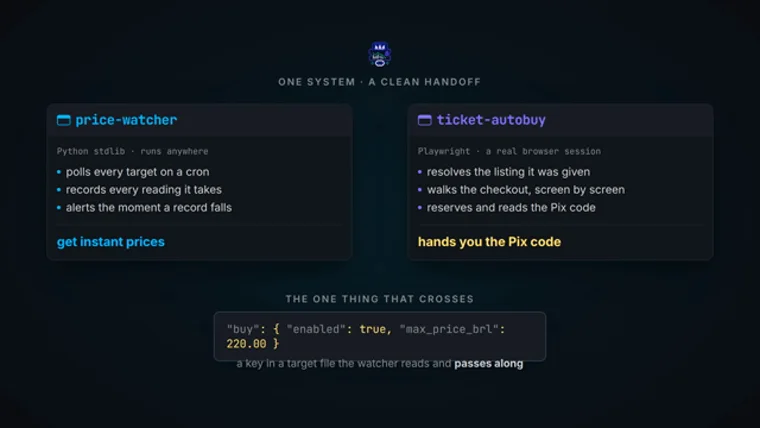
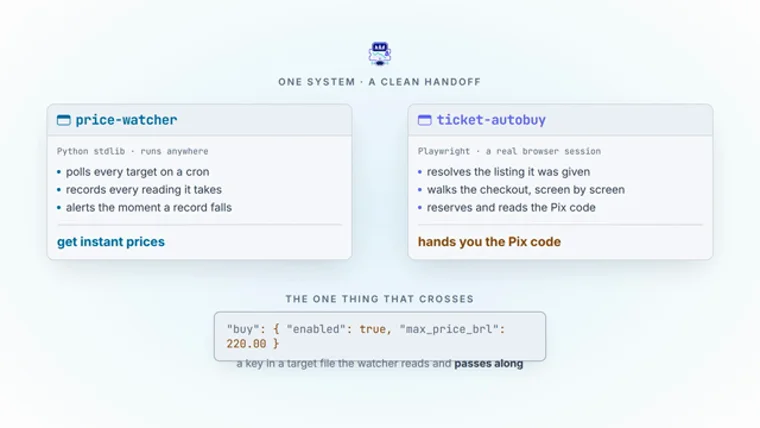

Shipped·price-watcher → ticket-autobuyBuilt — both cuts rendered
One system. Two halves. One line.
A 45-second replacement for a reel that had no UI, no mark and no
identity — rebuilt in the surfaces these two tools actually touch, and cut
for both themes. Every still below is the real render.
Format
1920×1080
Duration
45.0s
Frame rate
30 fps
Frames
8
Cuts
dark + light
Gate
check passed
Showing
Swaps all eight stills. Both cuts came from one source file.
Why v2
I pulled frames from the rendered v1 at t=2.8, 11.0,
15.6 and 19.4. All five scenes are typographic slides on a flat
ground — no chrome, no mark, no surface. It reads as generic cyan-on-dark, which
HyperFrames' own house-style.md lists by name as the first lazy default to
question.
Three things change. The mark exists now —
assets/vector-nobg.svg (1254², 111 paths) has never once appeared in
the reel; it opens and closes v2 and does a job in between. Every scene sits in real
UI furniture — a terminal, a Telegram thread, a browser under automation, all
built in HTML rather than captured. And one brand, one journey: per your call the
two repos aren't rivals, they're step A and step B of the same system, so one mark covers
both and the line between them is a handoff rather than a wall.
Two cuts, one source
They are not two compositions — that would let the timing drift the first time one
was edited alone. One index.html declares a theme variable and
the CLI renders both from it in a single command:
--batch renders one output per variable row; --strict-variables
fails the render if theme is ever undeclared or mistyped rather than quietly
warning. Layout, timing and motion are physically the same source, so the two cuts cannot
desynchronise.
Why both is the right answer, not just twice the work: GitHub honours
prefers-color-scheme in a README via <picture> — the
very pattern the HyperFrames README uses for its own logo. Today's single dark hero floats
as a black slab for every reader on GitHub's default light theme, in both repos. And the
portfolio already ships a data-theme switch, so the case-study hero can match
the page it sits in.

Dark cut — ground #0c0e12

Light cut — ground #ffffff
Frame 5 in both, from the actual render. These two stay
pinned for comparison — the toggle above does not move them.
The constraint that governs every frame
Your own case-study memory files this record as featured: false for a stated
reason: “zero design evidence — two CLIs, no interface.” That is
still true. Adding UI to fix “no UI” must not quietly contradict it, so the
reel may only depict surfaces these tools genuinely touch.
May appear
A terminal window watch.py — the literal interface
A Telegram message the real notification sink
A browser under Playwright buy.py drives a real one
A JSON payload / target file what the adapter actually parses
May not appear
A price-watcher dashboard does not exist
A settings or admin panel does not exist
A charting or analytics app does not exist
Seller branding, CPF, phone, cookie, chat id carried over from frame.md
Inventing an interface to fix “no UI” would be the same
kind of lie the reel exists to avoid. Everything below is a surface that is really there.
Palette — both grounds, every value already a token
The light column is not invented. tokens.css already carries a complete
:root[data-theme="light"] semantic layer written for exactly this problem
— and its comment, sitting in the dark block, says so:
--primary is the fill; --primary-ink is foreground ink.
They happen to be identical on the dark canvas, but separating them prevents cyan text
from failing contrast against the light canvas.
That is the whole light-theme problem, already solved: #00c8ff measures
1.96:1 on white and cannot be type there. The design system routes around it, so v2 does too.
Role
Dark cut
Light cut
Ground
#0c0e12
#ffffff
Heading ink
#f7f7f7
19.4:1 ✓
#0c0e12
19.4:1 ✓
A-side — the watcher(type)
#00c8ff
9.9:1 ✓
#00769d
5.2:1 ✓
B-side — the buyer(type)
#826AFB
5.0:1 ✓
#625df5
4.8:1 ✓
B-side fill & glow only
#4F2DEA
2.67:1 never type
#4F2DEA
7.2:1 ✓
The refusal
#ff5d8b
#d7004b
5.3:1 ✓
The armed ceiling — the key that crosses
#fde272
#854a0e
7.0:1 ✓
The confirmed order — once, Frame 7
#22c55e
#095c37
8.0:1 ✓
#4F2DEA is a fill, a stroke and
a glow — never type on the dark ground, where it measures 2.67:1. On white it
passes at 7.2:1 and becomes real type. This inversion is the rule most likely to get broken
during the build, so it is written down twice.
The teal is gone. v1 had none, and I had proposed one for the
0 dependencies badge. There is no contrast-safe teal token for the light
ground, and spending a sixth hue on a claim that is not a status was wrong anyway. The
badge is neutral ink in both cuts — which keeps green meaning exactly one
thing: the order in Frame 7.
⛔ Do not apply --brand-mark-filter. The light
theme sets it to invert(1), correct for the monochrome wordmark it was written
for and catastrophic here — inverting a full-colour violet illustration yields
yellow-green sludge. And the mark needs no help: png.png shows it on white and
it is plainly where it was designed to live, its near-white interior held inside a violet
outline that does all the work. The light cut is the mark's home ground.
45 seconds, allocated
14.2s
26.8s
36.6s
45.6s
57.2s — longest
66.2s
74.4s
84.0s
0s10s20s30s40s45s
Frame 5 carries the longest hold because it carries
the argument — frame.md already says so, and v1 honoured it. Everything
left of it is the watcher; everything right of it is the buyer.
Cold open on bare ground. The ticket's outer contour draws on as a stroke, the
interior fills cross-fade up underneath it, and a violet bloom lifts and settles.
The arrow between the names draws left to right — the journey stated once,
in one gesture.
The exit is a match cut, not a wipe. The mark shrinks and
travels to the top-left, where it lands as the favicon in Frame 2. The brand
doesn't get introduced and then abandoned; it becomes the furniture.
Build risk: drawing all 111 paths would be soup. Only the outer
contour draws; the rest cross-fades. Fallback is a masked wipe across the whole mark.
Real browser chrome — tab strip carrying the mark as favicon, address pill,
reload. The page shows what a human sees: the event, and one number. The
cursor travels in, presses the disclosure, and the drawer opens onto the JSON
underneath.
That is the adapter's actual claim: the site is Next.js SSR and ships the whole
matrix in its payload, which is exactly why a CSS scraper would be worse than useless.
A real defect being fixed, not a restyle. v1 tweens
#s1-matrix { height }. The animation rules contract forbids
width/height/top/left tweens
outright — they snap to integer device pixels and stutter under the
seek-by-frame renderer. v2 opens the drawer with a mask and a counter-scale.
The browser travels up and out; a terminal rises into its place. Real window chrome,
muted dots, a true title bar. The command types, character by character, with
a blinking caret.
Log lines arrive on a beat rather than as a dump — a watcher is a thing that
runs over time, and a single paste would read as a static list. The
record-low line updating in place is the rule firing: edge-triggered, which is the
repo's own stated invariant.
The terminal stays on screen and racks out of focus. A Telegram bubble rises
into the sharp plane, carrying the mark as the bot's avatar — so the brand is
doing a job rather than sitting in a corner.
NEVER BUYS gets its own beat. It is the
load-bearing claim of the whole piece, and v1 spends it as one badge in a row of two
at the bottom of a frame. Here it stamps: a press-spring overshoot, then dead still.
No chat id, no handle, no phone number. The timestamp is authored.
Where the mark must sit on an uncertain ground, png-profile-nobg.png
carries its own blue disc and works on either cut.
The centre of the argument, and the frame a reader pauses on. The divider
draws top-to-bottom on stroke-dashoffset — a boundary being
decided, which is what actually happened. The halves then open out from it
with mirrored book-open tilts, each away from the centre, so the motion itself says
these are two things and the line is between them.
This is where your “one system” reframe lands. The
Frame 1 lockup returns — small, centred, straddling the line. One mark
above, two halves below. The buy block materialises on the
divider and stays there: the only object in 45 seconds that touches both sides.
v1 scales the divider in on scaleY. Drawing it is both the
rule-sanctioned mechanism and the better read. ~2.2s of authored stillness before the exit.
06
The walk
00:30.4 → 00:36.6 · 6.2s · in: vertical travel, the line persists
Your in-UI navigation lives here: a real five-step stepper that advances screen by
screen at the measured cadence, a cursor that travels to Reservar and
presses with a ripple, and a budget bar filling to 18.37 of its 45s ceiling.
⛔ Everything in this frame lives right of the line.
Your v1 post-mortem records this as the one error caught in a contact sheet and not
by the linter: the order card had been sitting over the watcher's column,
which reads as “the watcher bought it” — the single claim the piece
exists to deny. check rated it info. It was nearly shipped.
No green anywhere in this frame. The steps tick cyan.
Still right of the line. The order card resolves under the walk that produced it and
its border goes green — the only green in 45 seconds.
The hold ticks down from 10:00, measured on order #7707X57Q where the
checkout says “Você tem 10 minutos para completar sua compra”.
It ticking is the point: something is running out, and the tool has deliberately
handed it to a person.
The Pix payload is greeked. 10 minutes, not 30 — the
README records that an earlier draft said 30, which is three times the real margin a
human actually gets.
Numbers count up and stop on their real value. Nothing rolls past its own
figure and settles back — that would be a lie about precision in a piece whose
whole argument is that the figures are checkable.
All three are verified: 228 + 196 = 424 was re-run against both suites
on 2026-09-12, after the READMEs were caught claiming 187 and 114.
The divider outlives everything it separated, and is the last thing
still lit.
What shipped
Artifact
Spec
Weight
Lands in
…-showcase-{dark,light}.mp4
1920×1080 · 30fps · 45.0s
5.7 MB
archive · case study
…-showcase-{dark,light}.webp
1080p · 12fps · q40 · loop 0
1.68 / 1.82 MB
both repo READMEs
…-preview-{dark,light}.mp4
1280×720 · crf 26
0.87 / 0.90 MB
the site
…-{dark,light}-poster.webp
still at t=28s
0.08 MB
poster · OG
Both WebPs measured 45.00s and loop=0
by summing their ANMF chunk durations — ffprobe reports
duration=N/A for an animated WebP, so it cannot confirm this and was not trusted to.
The two cuts were proved genuinely different, not just differently encoded:
mean luminance at t=2/8/25/38s reads ~22/255 dark against ~245/255 light.
⛔ One thing I did not do: the site's case-study hero takes fixed
filenames and has no theme logic, so it now carries the dark cut under its existing
names. Making that hero theme-aware needs a change in [slug].astro /
projects.ts that you haven't asked for.
Four changes you called, all in both cuts
The host is named — buyticketbrasil.com reads in full in the
address bar. The copy is positive throughout — NEVER BUYS became
ALWAYS PRECISE, cannot buy became get instant prices,
and left unpaid on purpose became you approve the payment.
That stamp is success green, not error red. And the divider only appears where
there are genuinely two columns — it draws at F6, holds through F7, retracts at
F8, and is gone from F5 and F8 entirely, at two thirds of its old length.
⭐ The contact sheet earned its keep again: the checker
passed a composition that was using about 60% of a 1080p frame. Everything was scaled up
and the watcher's dead half now holds the real
history/<target>.jsonl it writes.